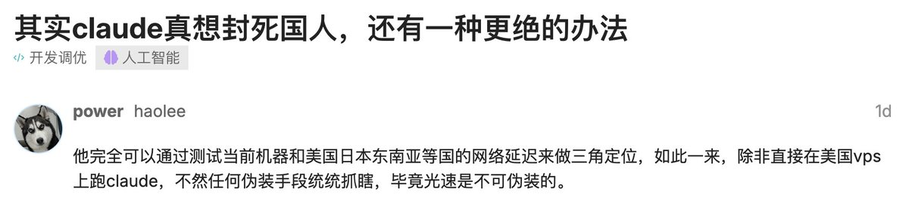

Wilf Lin
@Wilf_Lin
@Saccc_c 你假装在台湾不就是了。三角定位精度烂的要死

Sac
@Saccc_c
L站刷到个帖子很有意思，关于如何全面封杀 cc 中国用户：
“可以通过测试当前机器和美国日本东南亚等国的网络延迟来做三角定位，如此一来，除非直接在美国vps上跑claude，不然任何伪装手段统统抓瞎，毕竟光速是不可伪装的。”
确实，如果测出机器到亚洲节点很近、到美国节点又有延迟，那不是都玩完了🤔 https://t.co/BjhjhTQkBd